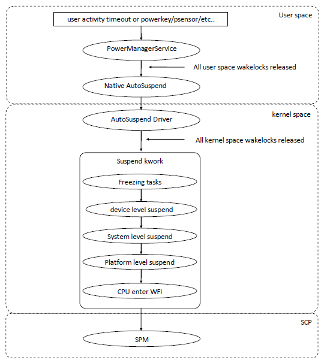
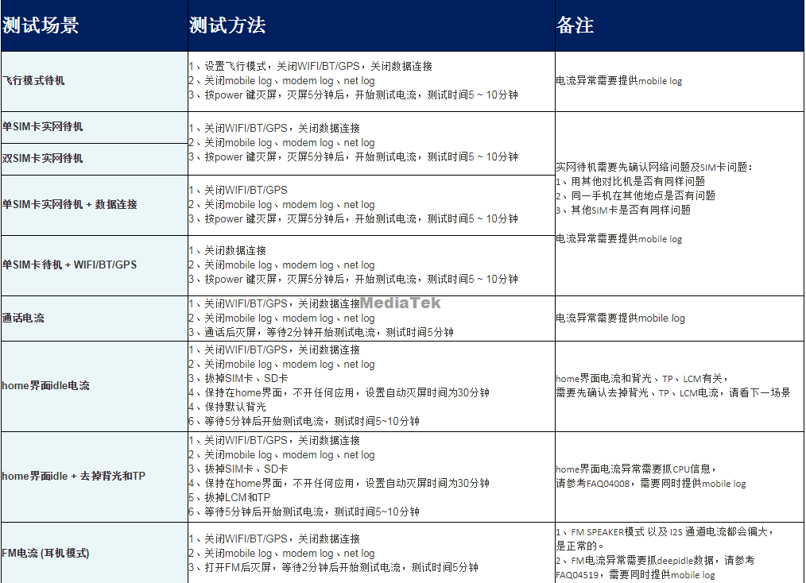

Android Low Power
开了MTK debugger log系统也是能够进入深度休眠，3C Battery Manager.apk记录电池电流使用
参考文档
SPM简述
suspend确切的说是MCU（ARM ）的suspend，也就是cpu进入Wait for interrupt状态（WFI）；因为对整个系统来说，CPU进WFI是整个系统睡眠的先决条件，debug也是从CPU是否进入WFI开始。
从Linux的角度来说，CPU进入suspend就是SW完全不跑了，停在suspend workqueue里面
SPM =System Power Manager，它掌控着cpu suspend之后系统是否能掉到最小电流的关键逻辑，你可以把它理解成一个投票机制，当系统的关键资源（memory、clock）没有任何人使用的时候，它就会让系统进入一个真正的深睡状态（最小电流）只要它检测到有任何资源请求还没释放，系统就无法降到底电。所以在底电问题上的debug流程中，不仅仅要看cpu有没有suspend成功，还要看SPM的状态是否正确。SPM里面有一个可编程控制器PCM（Programmable Command Master）。CPU在进去WFI之前会把SPM的firmware写入PCM，然后PCM就依据firmware的逻辑来控制SPM的工作。跟SPM强相关的一个东西就是系统中的时钟请求信号，也就是26M时钟开关的控制逻辑；因为系统工作在最小电流的时候，SPM只依靠32K时钟工作；因此要判断系统是不是已经到深睡状态，就要看26M有没有关闭。
kernel-4.19/drivers/misc/mediatek/base/power/spm/mt6765
wake lock
cat sys/power/wake_lock
Android Q能看，Android R没了
Suspend Flow

code path
frameworks/base/services/core/java/com/android/server/power/PowerManagerService.java
frameworks/base/services/core/jni/com_android_server_power_PowerManagerService.cpp
system/hardware/interfaces/suspend/1.0/default/
kernel-x.x/kernel/power/
note:
如果系统完全休眠，则CPU相关power下电（包括Vproc/Vsram）、DRAM进入self-refresh状态（DRAMC所在power domain Vcore进入lowpower mode）、26M off，SPM（work clk 32K）接手监控系统；
如果26M clk没有关闭，则表明sub-system仍有work，需从log尝试分析定位；
wake_lock是由内核维护的，当没有进程使用的时候，就会开始进入Suspend Flow；
Check AP suspend
AP suspend后console均被disable，只能从kernel log中确认AP是否进入suspend；
如下log表示CPU休眠下去后被唤醒源唤醒：
<4>[ 1921.171999] -(0)[5339:Binder:424_2][name:spm&][SPM] suspend wake up by R12_CCIF0_EVENT_B, timer_out = 1722381, r13 = 0xc400112c, debug_flag = 0x201913ff 0x0, r12 = 0x100, r12_ext = 0x0, raw_sta = 0x0, idle_sta = 0x979, req_sta = 0x420020ea, event_reg = 0x90100000, isr = 0x0, raw_ext_sta = 0x80069095, wake_misc = 0x0, pcm_flag = 0x80080 0x40, req = 0x0, wlk_cntcv_l = 0xd510a85e, wlk_cntcv_h = 0xbe, 26M_off_pct = 0示例log
<6>[ 1921.017769] (4)[5339:Binder:424_2][ISP][ISP_suspend] cam2 - X. UserCount=0,wakelock:0,devct:4 <5>[ 1921.018457] (4)[5339:Binder:424_2][Thermal/TZ/CPU]tscpu_thermal_suspend <6>[ 1921.018823] (4)[5339:Binder:424_2][SSPM_TS] update base: ts=1921018810005, tick=0xbeac370f15, fz=1, ver=2 <5>[ 1921.018862] (4)[5339:Binder:424_2][CMDQ]cmdq_suspend ignore <5>[ 1921.018879] (4)[5339:Binder:424_2][CMDQ]cmdq_core_suspend usage:0 exec thread:0x0 <6>[ 1921.019098] (4)[5339:Binder:424_2][M4U] M4U backup in suspend <5>[ 1921.019482] (4)[5339:Binder:424_2][Power/PPM] ppm_main_suspend: suspend callback in <6>[ 1921.019755] (4)[5339:Binder:424_2]suspend of devices complete after 37.083 msecs <6>[ 1921.024445] (4)[5339:Binder:424_2]late suspend of devices complete after 4.659 msecs <6>[ 1921.025112] (4)[5339:Binder:424_2][WMT-CONSYS-HW][I]mtk_wmt_suspend: mtk_wmt_suspend !! <6>[ 1921.029375] (4)[5339:Binder:424_2]noirq suspend of devices complete after 4.331 msecs <6>[ 1921.029407] (4)[5339:Binder:424_2]Disabling non-boot CPUs ... <5>[ 1921.043789] (4)[5339:Binder:424_2]CPU1: shutdown <6>[ 1921.044855] (4)[5339:Binder:424_2]psci: CPU1 killed (polled 0 ms) <6>[ 1921.046024] (6)[0:swapper/6]CPU6: update max cpu_capacity 667 <6>[ 1921.046350] (0)[0:swapper/0]CPU2: update max cpu_capacity 1024 <5>[ 1921.063064] (4)[5339:Binder:424_2]CPU2: shutdown <6>[ 1921.064123] (4)[5339:Binder:424_2]psci: CPU2 killed (polled 0 ms) <6>[ 1921.065945] (4)[0:swapper/4]CPU4: update max cpu_capacity 667 <5>[ 1921.078925] (4)[5339:Binder:424_2]CPU3: shutdown <6>[ 1921.079980] (4)[5339:Binder:424_2]psci: CPU3 killed (polled 0 ms) <6>[ 1921.081984] (6)[0:swapper/6]CPU6: update max cpu_capacity 667 <5>[ 1921.095201] (5)[5339:Binder:424_2]CPU4: shutdown <6>[ 1921.096262] (5)[5339:Binder:424_2]psci: CPU4 killed (polled 0 ms) <6>[ 1921.097969] (0)[0:swapper/0]CPU7: update max cpu_capacity 667 <5>[ 1921.118996] (6)[5339:Binder:424_2]CPU5: shutdown <6>[ 1921.120051] (6)[5339:Binder:424_2]psci: CPU5 killed (polled 0 ms) <6>[ 1921.122001] -(0)[10:rcu_preempt]CPU0: update max cpu_capacity 1024 <4>[ 1921.142571] -(6)[41:migration/6]IRQ 6: no longer affine to CPU6 <5>[ 1921.142927] (7)[5339:Binder:424_2]CPU6: shutdown <6>[ 1921.143978] (7)[5339:Binder:424_2]psci: CPU6 killed (polled 0 ms) <6>[ 1921.146012] -(0)[10:rcu_preempt]CPU0: update max cpu_capacity 1024 <5>[ 1921.167652] (0)[5339:Binder:424_2]CPU7: shutdown <6>[ 1921.169707] (0)[5339:Binder:424_2]psci: CPU7 killed (polled 0 ms) <6>[ 1921.171922] -(0)[5339:Binder:424_2][ccci1/mcd][ccci_modem_plt_suspend] md->hif_flag = 3 <4>[ 1921.171941] -(0)[5339:Binder:424_2]scp status: sleep mode <6>[ 1921.171967] -(0)[5339:Binder:424_2]auxadc_cali_imix_r pre_SOC=68 SOC=68, skip <6>[ 1921.171991] -(0)[5339:Binder:424_2][ccci1/cldma][cldma_plat_suspend] <5>[ 1921.171999] -(0)[5339:Binder:424_2]suspend warning[0m: pg_md1 <5>[ 1921.171999] -(0)[5339:Binder:424_2]suspend warning[0m: pg_conn <4>[ 1921.171999] -(0)[5339:Binder:424_2][name:spm&]NO pll_if_on !!! <4>[ 1921.171999] -(0)[5339:Binder:424_2][name:spm&]NO subsys_if_on !!! <4>[ 1921.171999] -(0)[5339:Binder:424_2][name:spm&]NO spm_get_is_infra_pdn !!! <4>[ 1921.171999] -(0)[5339:Binder:424_2][name:spm&][SPM] sec = 5401, wakesrc = 0xe87ddef (1)(1) <4>[ 1921.171999] -(0)[5339:Binder:424_2][name:spm&][SPM] wlk_cntcv_l = 0xac558184, wlk_cntcv_h = 0xbe <4>[ 1921.171999] -(0)[5339:Binder:424_2][name:spm&][SPM] md_settle = 99, settle = 99 <4>[ 1921.171999] -(0)[5339:Binder:424_2][name:spm&][SPM] suspend wake up by R12_CCIF0_EVENT_B, timer_out = 1722381, r13 = 0xc400112c, debug_flag = 0x201913ff 0x0, r12 = 0x100, r12_ext = 0x0, raw_sta = 0x0, idle_sta = 0x979, req_sta = 0x420020ea, event_reg = 0x90100000, isr = 0x0, raw_ext_sta = 0x80069095, wake_misc = 0x0, pcm_flag = 0x80080 0x40, req = 0x0, wlk_cntcv_l = 0xd510a85e, wlk_cntcv_h = 0xbe, 26M_off_pct = 0 <4>[ 1921.171999] -(0)[5339:Binder:424_2][name:spm&][SPM] sleep_count = 978 <6>[ 1921.172026] -(0)[5339:Binder:424_2][ccci1/cldma]cldma_plat_resume <6>[ 1921.172103] -(0)[5339:Binder:424_2][ccci1/cldma]Resume cldma pdn register ...11 <6>[ 1921.172133] -(0)[5339:Binder:424_2][ccci1/cldma]Resume cldma pdn register done <4>[ 1921.172259] -(0)[5339:Binder:424_2]scp status: sleep mode <6>[ 1921.172273] -(0)[5339:Binder:424_2][ccci1/mcd][ccci_modem_plt_resume] md->hif_flag = 3 <6>[ 1921.172407] (0)[5339:Binder:424_2]Enabling non-boot CPUs ... <6>[ 1921.173890] -(1)[0:swapper/1]Detected VIPT I-cache on CPU1 <6>[ 1921.173937] -(1)[0:swapper/1]GICv3: CPU1: found redistributor 1 region 0:0x000000000c120000 <6>[ 1921.173997] -(1)[0:swapper/1]CPU1: Booted secondary processor 0x0000000001 [0x410fd034] <6>[ 1921.174947] (0)[5339:Binder:424_2]CPU1 is up <6>[ 1921.176496] -(2)[0:swapper/2]Detected VIPT I-cache on CPU2 <6>[ 1921.176534] -(2)[0:swapper/2]GICv3: CPU2: found redistributor 2 region 0:0x000000000c140000 <6>[ 1921.176581] -(2)[0:swapper/2]CPU2: Booted secondary processor 0x0000000002 [0x410fd034] <6>[ 1921.177394] (0)[5339:Binder:424_2]CPU2 is up <6>[ 1921.178782] -(3)[0:swapper/3]Detected VIPT I-cache on CPU3 <6>[ 1921.178824] -(3)[0:swapper/3]GICv3: CPU3: found redistributor 3 region 0:0x000000000c160000 <6>[ 1921.178871] -(3)[0:swapper/3]CPU3: Booted secondary processor 0x0000000003 [0x410fd034] <6>[ 1921.179730] (0)[5339:Binder:424_2]CPU3 is up <6>[ 1921.181753] -(4)[0:swapper/4]Detected VIPT I-cache on CPU4 <6>[ 1921.181846] -(4)[0:swapper/4]GICv3: CPU4: found redistributor 100 region 0:0x000000000c180000 <6>[ 1921.181853] (2)[0:swapper/2]CPU2: update max cpu_capacity 1024 <6>[ 1921.181961] -(4)[0:swapper/4]CPU4: Booted secondary processor 0x0000000100 [0x410fd034] <6>[ 1921.183917] (4)[30:cpuhp/4][Power/cpufreq] 7,0,32,0,833,833,833,833 <3>[ 1921.184567] (4)[30:cpuhp/4]cpu cpu4: opp_list_debug_create_link: Failed to create link <3>[ 1921.184585] (4)[30:cpuhp/4]cpu cpu4: _add_opp_dev: Failed to register opp debugfs (-12) <3>[ 1921.184614] (4)[30:cpuhp/4]cpu cpu5: opp_list_debug_create_link: Failed to create link <3>[ 1921.184629] (4)[30:cpuhp/4]cpu cpu5: _add_opp_dev: Failed to register opp debugfs (-12) <3>[ 1921.184655] (4)[30:cpuhp/4]cpu cpu6: opp_list_debug_create_link: Failed to create link <3>[ 1921.184670] (4)[30:cpuhp/4]cpu cpu6: _add_opp_dev: Failed to register opp debugfs (-12) <3>[ 1921.184695] (4)[30:cpuhp/4]cpu cpu7: opp_list_debug_create_link: Failed to create link <3>[ 1921.184711] (4)[30:cpuhp/4]cpu cpu7: _add_opp_dev: Failed to register opp debugfs (-12) <5>[ 1921.184726] (4)[30:cpuhp/4][Power/cpufreq] energy model register result -17 <5>[ 1921.184738] (4)[30:cpuhp/4][Power/cpufreq] energy model regist fail <6>[ 1921.185284] (0)[5339:Binder:424_2]CPU4 is up <6>[ 1921.186626] -(5)[0:swapper/5]Detected VIPT I-cache on CPU5 <6>[ 1921.186675] -(5)[0:swapper/5]GICv3: CPU5: found redistributor 101 region 0:0x000000000c1a0000 <6>[ 1921.186721] -(5)[0:swapper/5]CPU5: Booted secondary processor 0x0000000101 [0x410fd034] <6>[ 1921.187811] (4)[5339:Binder:424_2]CPU5 is up <6>[ 1921.189337] -(6)[0:swapper/6]Detected VIPT I-cache on CPU6 <6>[ 1921.189382] -(6)[0:swapper/6]GICv3: CPU6: found redistributor 102 region 0:0x000000000c1c0000 <6>[ 1921.189435] -(6)[0:swapper/6]CPU6: Booted secondary processor 0x0000000102 [0x410fd034] <6>[ 1921.189836] (3)[0:swapper/3]CPU3: update max cpu_capacity 1024 <6>[ 1921.190697] (0)[5339:Binder:424_2]CPU6 is up <6>[ 1921.192038] -(7)[0:swapper/7]Detected VIPT I-cache on CPU7 <6>[ 1921.192086] -(7)[0:swapper/7]GICv3: CPU7: found redistributor 103 region 0:0x000000000c1e0000 <6>[ 1921.192137] -(7)[0:swapper/7]CPU7: Booted secondary processor 0x0000000103 [0x410fd034] <6>[ 1921.193360] (0)[5339:Binder:424_2]CPU7 is up <6>[ 1921.193840] (1)[0:swapper/1]CPU1: update max cpu_capacity 1024 <6>[ 1921.196519] (0)[5339:Binder:424_2][WMT-CONSYS-HW][I]mtk_wmt_resume: mtk_wmt_resume !! <6>[ 1921.196678] (0)[5339:Binder:424_2]noirq resume of devices complete after 3.148 msecs <6>[ 1921.197095] (7)[958:kworker/u17:2][ccci1/cif]CCIF_MD wakeup source:(5/10/0)(679) <3>[ 1921.197654] (6)[655:mtk_wmtd][WMT-CONSYS-HW][E]consys_check_reg_readable(1235):connsys clock check fail 0x18007000(0x50001) <4>[ 1921.197669] (0)[5644:kworker/0:1][WMT-CORE][I]opfunc_get_consys_state:cr cannot readable <6>[ 1921.197722] (0)[5644:kworker/0:1][WMT-CONSYS-HW][I]plat_resume_handler:0x00000000;0x00000000;0x00000000;0x00000000;0x00000000;0x00000000;0x00000000;0,0,0,0,0;0,0,0,0,0 <6>[ 1921.200433] (0)[5339:Binder:424_2]early resume of devices complete after 3.123 msecs <5>[ 1921.200797] (0)[5339:Binder:424_2][Power/PPM] ppm_main_resume: resume callback in <6>[ 1921.201090] (0)[5339:Binder:424_2][M4U] M4U restore in resume <5>[ 1921.201246] (0)[5339:Binder:424_2][CMDQ]cmdq_resume ignore <6>[ 1921.201292] (0)[5339:Binder:424_2][SSPM_TS] update base: ts=1921201282235, tick=0xbed5169011, fz=0, ver=3 <5>[ 1921.202601] (0)[5339:Binder:424_2][Thermal/TZ/CPU]tscpu_thermal_resume <6>[ 1921.203399] (0)[5339:Binder:424_2]vcodec_resume ok <6>[ 1921.203462] (0)[5339:Binder:424_2][ISP][ISP_resume] cam2 - X. UserCount=0
wake source
adb shell cat /sys/kernel/debug/wakeup_sources > wakeup_sources.xls
通过读取上述节点可以dump出系统wakeup sources详情，读取的节点内容文件最好用excel打开、方便对齐查看：
active_count:对应wakeup source被激活的次数.
event_count:被信号唤醒的次数
wakeup_count:中止suspend的次数.
expire_count:对应wakeup source超时的次数.
active_since:本地激活时长，时间单位跟kernel log前缀时间是一样(kernel单调递增时间). 0表示未激活；
total_time:对应wakeup source活跃的总时长.
max_time:对应的wakeup source持续活跃最长的一次时间.
last_change:上一次wakeup source变化的时间(从持锁到释放or释放到持锁)，时间单位跟kernel log前缀时间是一样(kernel单调递增时间).
prevent_suspend_time:对应wakeup source阻止进入autosleep的总累加时间.
cat /proc/interrupts
可以查看当前中断统计情况
cat /proc/mtk_lpm/cpuidle/spm/spm_sleep_count
Wakeup Reasons
SPM R12寄存器记录MCU的唤醒源，MCU被唤醒时log中会将具体唤醒源打印：
#define R12_PCM_TIMER_EVENT (1U << 0) ----> SPM 定时器唤醒，基本不会有，只有当系统没有其他唤醒源时，超过1h，才会有此timer唤醒，可以理解为SPM 里面的看门狗
#define R12_SPM_TWAM_IRQ_B (1U << 1) ----> SPM 用来debug的中断，不会有
#define R12_KP_IRQ_B (1U << 2) ----> 按键中断
#define R12_APWDT_EVENT_B (1U << 3) ----> AP侧的WDT(看门狗)中断
#define R12_APXGPT1_EVENT_B (1U << 4) ----> APXGPT，这个是system timer，对应到软件的hrtimer，只有在idle时才有
#define R12_CONN2AP_SPM_WAKEUP_B (1U << 5) ----> CONN，WCN的中断，wifi/BT/GPS/FM的唤醒
#define R12_EINT_EVENT_B (1U << 6) ----> 外部中断唤醒，譬如PMIC EINT，这类唤醒比较常见
#define R12_CONN_WDT_IRQ_B (1U << 7) ----> CONN的WDT(看门狗)中断
#define R12_CCIF0_EVENT_B (1U << 8) ----> Modem的CCIF0唤醒，譬如，网络唤醒，网络URC唤醒，这类唤醒比较常见
#define R12_LOWBATTERY_IRQ_B (1U << 9) ----> 低电池唤醒，基本没有
#define R12_SC_SSPM2SPM_WAKEUP (1U << 10) ----> SSPM唤醒，基本没有
#define R12_SC_SCP2SPM_WAKEUP (1U << 11) ----> sensor hub唤醒
#define R12_SC_ADSP2SPM_WAKEUP (1U << 12) ----> ADSP 也就是audio之类的唤醒，基本没有
#define R12_PCM_WDT_EVENT_B (1U << 13) ---->跟1是类似
#define R12_USBX_CDSC_B (1U << 14) ---->USB 唤醒
#define R12_USBX_POWERDWN_B (1U << 15) ---->USB 唤醒
#define R12_SYS_TIMER_EVENT_B (1U << 16) ---->跟4类似
#define R12_EINT_EVENT_SECURE_B (1U << 17) ---->跟 SECURE EINT唤醒
#define R12_CCIF1_EVENT_B (1U << 18) ---->跟8类似
#define R12_UART0_IRQ_B (1U << 19) ---->uart 0唤醒
#define R12_AFE_IRQ_MCU_B (1U << 20) ---->AFE，audio相关的唤醒
#define R12_THERMAL_CTRL_EVENT_B (1U << 21) ---->Thermal的唤醒
#define R12_SYS_CIRQ_IRQ_B (1U << 22) ----> CIRQ的唤醒，系统休眠时会将GIC backup到CIRQ
#define R12_MD2AP_PEER_WAKEUP_EVENT (1U << 23) ----> 数据业务唤醒
#define R12_CSYSPWREQ_B (1U << 24) ----> debug用
#define R12_MD1_WDT_B (1U << 25) ----> Modem的WDT(看门狗)唤醒
#define R12_AP2AP_PEER_WAKEUP_EVENT (1U << 26) ----> 数据业务唤醒
#define R12_SEJ_EVENT_B (1U << 27) ----> SEJ模块唤醒
#define R12_SPM_CPU_WAKEUP_EVENT (1U << 28) ----> CPU唤醒
#define R12_CPU_IRQOUT (1U << 29) ----> CPU唤醒
#define R12_CPU_WFI (1U << 30) ----> CPU唤醒
#define R12_MCUSYS_IDLE_TO_EMI_ALL (1U << 31) ----> CPU唤醒
针对CCIF的唤醒，一般可以对应到对应的channel，每个channel都对应到不同的user，CCCI user table；
Suspend抓出联网的apk
system/netd/server/FwmarkServer.cpp
int FwmarkServer::processClient(SocketClient* client, int* socketFd){ // ...省略 if (netdEventListener != nullptr) { char addrstr[INET6_ADDRSTRLEN]; char portstr[sizeof("65536")]; const int ret = getnameinfo((sockaddr*) &connectInfo.addr, sizeof(connectInfo.addr), addrstr, sizeof(addrstr), portstr, sizeof(portstr), NI_NUMERICHOST | NI_NUMERICSERV); + LOG(ERROR) << "FwmarkServer connect uid = " << client->getUid() << " pid = " << client->getPid() << " addr = " << addrstr << ", port " << portstr;
Called after a socket connect() completes. This reports connect event including netId, destination IP address, destination port, uid, connect latency, and connect errno if any.
查看mobile main log(logcat log)
Line 25240: 11-21 10:44:42.355904 560 737 E libnetd_resolv: FwmarkServer connect uid = 10122 pid = 7412 addrstr 111.12.28.85, portstr 443 Line 25309: 11-21 10:44:42.702679 560 737 E libnetd_resolv: FwmarkServer connect uid = 10122 pid = 7412 addrstr 2409:8c54:1011:1:3::3fd, portstr 443 Line 25314: 11-21 10:44:42.703503 560 737 E libnetd_resolv: FwmarkServer connect uid = 10122 pid = 7412 addrstr 2409:8c54:1011:1:3::3fd, portstr 443 Line 25319: 11-21 10:44:42.704260 560 737 E libnetd_resolv: FwmarkServer connect uid = 10122 pid = 7412 addrstr 2409:8c54:1011:1:3::3fd, portstr 443 Line 25324: 11-21 10:44:42.704985 560 737 E libnetd_resolv: FwmarkServer connect uid = 10122 pid = 7412 addrstr 2409:8c54:1011:1:3::3fd, portstr 443 Line 25329: 11-21 10:44:42.705705 560 737 E libnetd_resolv: FwmarkServer connect uid = 10122 pid = 7412 addrstr 2409:8c54:1011:1:3::3fd, portstr 443 Line 25334: 11-21 10:44:42.706373 560 737 E libnetd_resolv: FwmarkServer connect uid = 10122 pid = 7412 addrstr 2409:8c54:1011:1:3::3fd, portstr 443 Line 25346: 11-21 10:44:43.132873 560 737 E libnetd_resolv: FwmarkServer connect uid = 10122 pid = 7412 addrstr 183.232.152.223, portstr 443 Line 25351: 11-21 10:44:43.135799 560 737 E libnetd_resolv: FwmarkServer connect uid = 10122 pid = 7412 addrstr 183.232.152.223, portstr 443
通过查看系统的UID和PID指导进程
wireshark是我们用来分析netlog的一个工具，通常用来定位开数据连接的待机功耗问题，查找是哪个APP/Process在使用数据
首先需要在抓log时，打开mtklog中的netlog，就可以找到netlog对应的文件
有时候最前面的【时间戳】格式会不对，会跟mobile log对不上，如果遇到了，可以通过如下菜单调整
[View]->[Time Display Format]
Wakeup log分析思路
原始唤醒源log，未经时间处理
<4>[11420.069673] -(0)[5339:Binder:424_2][name:spm&]NO pll_if_on !!! <4>[11420.069673] -(0)[5339:Binder:424_2][name:spm&]NO subsys_if_on !!! <4>[11420.069673] -(0)[5339:Binder:424_2][name:spm&]NO spm_get_is_infra_pdn !!! <4>[11420.069673] -(0)[5339:Binder:424_2][name:spm&][SPM] sec = 5401, wakesrc = 0xe87ddef (1)(1) <4>[11420.069673] -(0)[5339:Binder:424_2][name:spm&][SPM] wlk_cntcv_l = 0x8c1fc309, wlk_cntcv_h = 0x106 <4>[11420.069673] -(0)[5339:Binder:424_2][name:spm&][SPM] md_settle = 99, settle = 99 <4>[11420.069673] -(0)[5339:Binder:424_2][name:spm&][SPM] suspend wake up by R12_EINT_EVENT_B, timer_out = 2168563, r13 = 0x26040000, debug_flag = 0x201913ff 0x0, r12 = 0x40, r12_ext = 0x0, raw_sta = 0x0, idle_sta = 0x97f, req_sta = 0x42000000, event_reg = 0x90100000, isr = 0x0, raw_ext_sta = 0x4006a0aa, wake_misc = 0x10000, pcm_flag = 0x80080 0x40, req = 0x0, wlk_cntcv_l = 0xbf683222, wlk_cntcv_h = 0x106, 26M_off_pct = 75 <4>[11420.069673] -(0)[5339:Binder:424_2][name:spm&][SPM] sleep_count = 1123 <6>[11420.069700] -(0)[5339:Binder:424_2][ccci1/cldma]cldma_plat_resume <6>[11420.069777] -(0)[5339:Binder:424_2][ccci1/cldma]Resume cldma pdn register ...11 <6>[11420.069808] -(0)[5339:Binder:424_2][ccci1/cldma]Resume cldma pdn register done
使用
suspend wake up by在kernel log中查找行，获取唤醒源
<4>[11420.069673] -(0)[5339:Binder:424_2][name:spm&][SPM] suspend wake up by R12_EINT_EVENT_B, timer_out = 2168563, r13 = 0x26040000, debug_flag = 0x201913ff 0x0, r12 = 0x40, r12_ext = 0x0, raw_sta = 0x0, idle_sta = 0x97f, req_sta = 0x42000000, event_reg = 0x90100000, isr = 0x0, raw_ext_sta = 0x4006a0aa, wake_misc = 0x10000, pcm_flag = 0x80080 0x40, req = 0x0, wlk_cntcv_l = 0xbf683222, wlk_cntcv_h = 0x106, 26M_off_pct = 75
使用DateConvert.py对kernel log时间进行转换；
2021-05-27 15:18:36.572280750 <4>[11420.069673] -(0)[5339:Binder:424_2][name:spm&]NO pll_if_on !!! 2021-05-27 15:18:36.572280750 <4>[11420.069673] -(0)[5339:Binder:424_2][name:spm&]NO subsys_if_on !!! 2021-05-27 15:18:36.572280750 <4>[11420.069673] -(0)[5339:Binder:424_2][name:spm&]NO spm_get_is_infra_pdn !!! 2021-05-27 15:18:36.572280750 <4>[11420.069673] -(0)[5339:Binder:424_2][name:spm&][SPM] sec = 5401, wakesrc = 0xe87ddef (1)(1) 2021-05-27 15:18:36.572280750 <4>[11420.069673] -(0)[5339:Binder:424_2][name:spm&][SPM] wlk_cntcv_l = 0x8c1fc309, wlk_cntcv_h = 0x106 2021-05-27 15:18:36.572280750 <4>[11420.069673] -(0)[5339:Binder:424_2][name:spm&][SPM] md_settle = 99, settle = 99 2021-05-27 15:18:36.572280750 <4>[11420.069673] -(0)[5339:Binder:424_2][name:spm&][SPM] suspend wake up by R12_EINT_EVENT_B, timer_out = 2168563, r13 = 0x26040000, debug_flag = 0x201913ff 0x0, r12 = 0x40, r12_ext = 0x0, raw_sta = 0x0, idle_sta = 0x97f, req_sta = 0x42000000, event_reg = 0x90100000, isr = 0x0, raw_ext_sta = 0x4006a0aa, wake_misc = 0x10000, pcm_flag = 0x80080 0x40, req = 0x0, wlk_cntcv_l = 0xbf683222, wlk_cntcv_h = 0x106, 26M_off_pct = 75 2021-05-27 15:18:36.572280750 <4>[11420.069673] -(0)[5339:Binder:424_2][name:spm&][SPM] sleep_count = 1123 2021-05-27 15:18:36.572280777 <6>[11420.069700] -(0)[5339:Binder:424_2][ccci1/cldma]cldma_plat_resume 2021-05-27 15:18:36.572280854 <6>[11420.069777] -(0)[5339:Binder:424_2][ccci1/cldma]Resume cldma pdn register ...11 2021-05-27 15:18:36.572280885 <6>[11420.069808] -(0)[5339:Binder:424_2][ccci1/cldma]Resume cldma pdn register done
使用
suspend wake up by在kernel log中查找行，获取唤醒源，并获取当前唤醒源log时间：
2021-05-27 15:18:36.572280750 <4>[11420.069673] -(0)[5339:Binder:424_2][name:spm&][SPM] suspend wake up by R12_EINT_EVENT_B, timer_out = 2168563, r13 = 0x26040000, debug_flag = 0x201913ff 0x0, r12 = 0x40, r12_ext = 0x0, raw_sta = 0x0, idle_sta = 0x97f, req_sta = 0x42000000, event_reg = 0x90100000, isr = 0x0, raw_ext_sta = 0x4006a0aa, wake_misc = 0x10000, pcm_flag = 0x80080 0x40, req = 0x0, wlk_cntcv_l = 0xbf683222, wlk_cntcv_h = 0x106, 26M_off_pct = 7515:18:36.572280750
15:18:36
利用kernel log获取的log时间在mobile main log(logcat log)对应开始处理大概位置，一般晚于kernel log时间，从这里分析看logcat log处理了哪些事务也可以大体判断被哪些事件触发了；
05-27 15:18:36.906838 3236 3236 D KeyguardUpdateMonitor: handleBatteryUpdate 05-27 15:18:36.948070 3236 3236 D KeyguardUpdateMonitor: received broadcast android.intent.action.BATTERY_CHANGED 05-27 15:18:36.949810 3236 3236 D KeyguardUpdateMonitor: handleBatteryUpdate 05-27 15:18:37.868659 3236 3236 D NotificationListener: onRankingUpdate 05-27 15:18:41.468714 767 767 I thermal_src: big tpcb jump! previous/current = -274000/29000 05-27 15:18:41.524269 1132 3522 D SntpClient: request time failed: java.net.SocketTimeoutException: Poll timed out 05-27 15:18:41.845205 565 565 E ccci_fsd(1): Failed to read from FS device (-1) !! errno = 4 05-27 15:18:41.845346 573 573 E ccci_rpcd: Failed to read from RPC device (-1) !! errno = 4 05-27 15:18:41.846069 773 855 D PQ : ccorr table index=0 05-27 15:18:41.846380 773 855 D PQ : [PQ_SERVICE] setPQParamWithFilter configFlag: 1 05-27 15:18:41.846485 961 1008 E VoLTE IMSM: Interrupt happen Interrupted system call (4) (module/mdagent/volte_imsm_93/src/imsmmd.c:2952) 05-27 15:18:41.847015 959 963 I [BIP] : [BIP AGENT] can not read data now, FD = (4), error number = (-395654453) 05-27 15:18:41.848376 986 1003 E VoLTE IMCB-CM: RECEIVE error code: EINTR, Need to retry #51 05-27 15:18:41.890310 767 767 I thermal_src: big tpcb jump! previous/current = 29000/-274000 05-27 15:18:41.893291 1132 5727 I BatteryStatsService: In wakeup_callback: suspend aborted 05-27 15:19:02.051607 565 565 E ccci_fsd(1): Failed to read from FS device (-1) !! errno = 4 05-27 15:19:02.051941 570 590 I ccci_mdinit: (1):is_delta_same delta t:26 delta b:25 delta:1 05-27 15:19:02.052013 570 590 D ccci_mdinit: (1):monitor_time_update_thread round:1465 ######## 05-27 15:19:02.052323 773 855 D PQ : ccorr table index=0 05-27 15:19:02.052719 773 855 D PQ : [PQ_SERVICE] setPQParamWithFilter configFlag: 1
05-27 15:18:41.893291 1132 5727 I BatteryStatsService: In wakeup_callback: suspend aborted* https://android.googlesource.com/platform/frameworks/base/+/master/services/core/jni/com_android_server_am_BatteryStatsService.cpp#150 * frameworks/base/services/core/jni/com_android_server_am_BatteryStatsService.cpp * static jint nativeWaitWakeup(JNIEnv *env, jobject clazz, jobject outBuf) * ALOGV("Got %d reasons", (int)wakeupReasons.size());
Mediatek平台功耗数据及测试手法
低功耗数据参考
[FAQ23255] MTK WIFI待机功耗
DCC搜索：MTXXXX_Low_Power_Data，例如：MT6762_Low_Power_Data
DCC/Smartphone/HW/Smart Phone/LTE_6M/MT6762/Test Report/Low Power
MT6762_Low_Power_Data_V1.3(LPDDR3).pdf
MT6762_Low_Power_Data_V1.2(LPDDR4X).pdf
测试手法
测试功耗数据之前，请先确认以下配置：
关闭 WIFI/BT/GPS，关闭数据连接，设置飞行模式。 （根据具体测试场景设置）
关闭 mobile log/modem log/net log，打开LOG会增加电流。注意：确认 /sdcard/mtklog （/data/mtklog） 中是否有 LOG 生成，确定关闭成功。
确认各个模块是否已经正常工作，各个模块都会影响功耗，需要在模块工作 OK 之后再测试功耗问题。
测试将所有第三方 APK 删除，排除第三方 APK 问题。
亮屏场景要关闭自动背光调节等功能；
打开log会增加电流，但无法抓取log，在出问题的时候，不用关心电流，而是关心什么唤醒了机器，也就是测试的时候关闭，解决问题的时候是需要打开的，获取log来解决问题；
各场景测试手法：

AP suspend异常debug及log分析
定位系统无法待机原因
blocking wakelock一般分为两种，一是上层应用透过PowerManagerService（后简称PMS）拿锁，另一种是kernel wakelock。
设备连接powermonitor可以直接从电流图判断休眠情况的定位方法，如果从电流图看到系统无法suspend，插入USB通过如下cmd dump当前阻止休眠的wakelocks：
adb shell
cat /sys/kernel/debug/wakeup_sources |sed -e ‘s/”^ “/”unnamed”/g’ | awk ‘{print $6 “\t” $1}’ | grep -v “^0” |sort -n
active_since name 24 WLAN 79 mt6360_pmu_chg.2.auto 24271 PowerManagerService.WakeLocks （PMS持锁） 35558 musb-hdrc （USB持锁，因插usb，属于正常现象）
如果有PMS持锁，则再执行如下cmd dump持锁的应用：
dumpsys power | grep “PARTIAL_WAKE_LOCK”
PARTIAL_WAKE_LOCK 'wake:com.google.android.gms/.auth.account.be.accountstate.LoginAccountsChangedIntentService' ACQ=-15s910ms (uid=10177 (displayid =0 pid=4937 pkg=com.google.android.gms uid=10177)
GMS应用持锁
通过查看中断次数来判断：cat /proc/interrupts
kernel log定位方法
在对应时间段log中搜索”active wakeup source”，可以定位到阻止系统休眠的wakelock：
active wakeup source: WLAN timeout
active wakeup source: PowerManagerService.WakeLocks
active wakeup source: ccci_poll
快速定位suspend/resume耗时较长问题
adb shell “echo 1 > /sys/module/kernel/parameters/initcall_debug”
adb shell “echo 1 > /sys/power/pm_print_times”
拔掉USB灭屏待机，确认系统suspend后，插入usb执行如下cmd:
adb shell
dmesg | grep ‘call ‘ | awk ‘{print $4 “\t” $8}’ | sort -k 2 -rn > /data/result.txt
adb pull /data/result.txt
打开result文件，可以看的每个device resume耗时（如下），找到耗时长的函数请相关owner确认是否可以优化：
dpm_name usecs bootdevice+ 25318 mt_charger+ 6406 13000000.mfg_lorne+ 5208 mt-pmic+ 3334
电池充放电
3CBatteryManager.apk
在设置选项中，电池可以将记录的数据保存出来
[History]
[左上角三条杠] -> [Settings] -> [Battery] -> [Export battery history]
修改监听参数
[左上角三条杠] -> [Settings] -> [Battery] -> [Monitoring]
进入suspend log时间
log
<5>[ 334.589624] (3)[2918:Binder:389_2][Power/PPM] ppm_main_suspend: suspend callback in <6>[ 334.589792] (3)[2918:Binder:389_2]PM: suspend of devices complete after 45.398 msecs <6>[ 334.592290] (3)[2918:Binder:389_2]PM: late suspend of devices complete after 2.480 msecs <6>[ 334.594776] (3)[2918:Binder:389_2]PM: noirq suspend of devices complete after 2.462 msecs <6>[ 334.594793] (3)[2918:Binder:389_2]Disabling non-boot CPUs ... <5>[ 334.617144] (3)[2918:Binder:389_2]CPU1: shutdown <6>[ 334.635834] (0)[2918:Binder:389_2]psci: Retrying again to check for CPU kill <6>[ 334.635849] (0)[2918:Binder:389_2]psci: CPU1 killed. <5>[ 334.652860] (0)[2918:Binder:389_2]CPU2: shutdown <6>[ 334.671829] (3)[2918:Binder:389_2]psci: Retrying again to check for CPU kill <6>[ 334.671880] (3)[2918:Binder:389_2]psci: CPU2 killed. <5>[ 334.692712] (0)[2918:Binder:389_2]CPU3: shutdown <6>[ 334.711805] (0)[2918:Binder:389_2]psci: Retrying again to check for CPU kill <6>[ 334.711818] (0)[2918:Binder:389_2]psci: CPU3 killed. <7>[ 334.713139] -(0)[2918:Binder:389_2]update base: ts=334713139257, tick=0x12e918b1e, fz=1, ver=0 <5>[ 334.713139] -(0)[2918:Binder:389_2][clkchk] unexpected unclosed MTCMOS: pg_conn <6>[ 334.713139] -(0)[2918:Binder:389_2]NO pll_if_on !!! <6>[ 334.713139] -(0)[2918:Binder:389_2][SPM-PMIC] [dlpt_R] pre_SOC=54 SOC=54 skip <7>[ 334.713139] -(0)[2918:Binder:389_2]mode change to 0xdc (write 0x220000dc), pid: 2918 <7>[ 334.713139] -(0)[2918:Binder:389_2][WDT] suspend <6>[ 334.713139] -(0)[2918:Binder:389_2][SPM] sec = 4800, wakesrc = 0xe87ddef (1)(1) <6>[ 334.713139] -(0)[2918:Binder:389_2][SPM] wlk_cntcv_l = 0x2e919a13, wlk_cntcv_h = 0x1 <6>[ 334.713139] -(0)[2918:Binder:389_2][SPM] md_settle = 99, settle = 99 <6>[ 334.713139] -(0)[2918:Binder:389_2]restore UART register start! <6>[ 334.713139] -(0)[2918:Binder:389_2]restore UART register finish! <3>[ 334.713139] -(0)[2918:Binder:389_2]CANNOT GET UART1 WAKE ACK <6>[ 334.713139] -(0)[2918:Binder:389_2][SPM] suspend wake up by R12_CCIF0_EVENT_B, timer_out = 8525789, r13 = 0x4604632c, debug_flag = 0x201913ff 0x80000002, r12 = 0x100, r12_ext = 0x0, raw_sta = 0x0, idle_sta = 0x979, req_sta = 0x420024e8, event_reg = 0x90100000, isr = 0x0, raw_ext_sta = 0x4005a095, wake_misc = 0x0, pcm_flag = 0x80080 0x0, req = 0x0, wlk_cntcv_l = 0xf82d846c, wlk_cntcv_h = 0x1, 26M_off_pct = 88 <6>[ 334.713139] -(0)[2918:Binder:389_2][SPM] dormant = 7, s_ddr = 0, s_vcore = 0, <6>[ 334.713139] -(0)[2918:Binder:389_2]ddr = 0, vcore = 0, sleep_count = 4 <5>[ 334.713139] -(0)[2918:Binder:389_2][ccci1/cif] CCIF wakeup channel: 0x60 <6>[ 334.713139] -(0)[2918:Binder:389_2]Resume caused by IRQ 16, SPM <7>[ 334.713139] -(0)[2918:Binder:389_2]mode change to 0xdd (write 0x220000dd), pid: 2918 <7>[ 334.713139] -(0)[2918:Binder:389_2]mode change to 0xdd (write 0x220000dd), pid: 2918 <7>[ 334.713139] -(0)[2918:Binder:389_2][WDT] resume(1) <6>[ 334.713139] -(0)[2918:Binder:389_2]Suspended for 260.188 seconds <7>[ 334.713152] -(0)[2918:Binder:389_2]update base: ts=334713145564, tick=0x1f82d9bb7, fz=0, ver=1 <6>[ 334.713168] -(0)[2918:Binder:389_2][ccci1/mcd]Resume cldma pdn register ...11 <6>[ 334.713187] -(0)[2918:Binder:389_2][ccci1/mcd]Resume cldma pdn register done <6>[ 334.713358] (0)[2918:Binder:389_2]Enabling non-boot CPUs ... <6>[ 334.714154] -(1)[0:swapper/1]Detected VIPT I-cache on CPU1 <6>[ 334.714182] -(1)[0:swapper/1]GICv3: CPU1: found redistributor 1 region 0:0x000000000c0a0000 <6>[ 334.714219] -(1)[0:swapper/1]CPU1: update cpu_capacity 1024 <6>[ 334.714224] -(1)[0:swapper/1]CPU1: Booted secondary processor [410fd034] <6>[ 334.714997] (0)[2918:Binder:389_2]CPU1 is up <6>[ 334.715936] -(2)[0:swapper/2]Detected VIPT I-cache on CPU2 <6>[ 334.715958] -(2)[0:swapper/2]GICv3: CPU2: found redistributor 2 region 0:0x000000000c0c0000 <6>[ 334.715982] -(2)[0:swapper/2]CPU2: update cpu_capacity 1024 <6>[ 334.715987] -(2)[0:swapper/2]CPU2: Booted secondary processor [410fd034] <6>[ 334.716840] (0)[2918:Binder:389_2]CPU2 is up <6>[ 334.717703] -(3)[0:swapper/3]Detected VIPT I-cache on CPU3 <6>[ 334.717725] -(3)[0:swapper/3]GICv3: CPU3: found redistributor 3 region 0:0x000000000c0e0000 <6>[ 334.717750] -(3)[0:swapper/3]CPU3: update cpu_capacity 1024 <6>[ 334.717755] -(3)[0:swapper/3]CPU3: Booted secondary processor [410fd034] <6>[ 334.719429] (0)[2918:Binder:389_2]CPU3 is up <6>[ 334.721390] (0)[2918:Binder:389_2]PM: noirq resume of devices complete after 1.798 msecs
<6>[ 334.713139] -(0)[2918:Binder:389_2]Suspended for 260.188 seconds
Suspended for 260.188 seconds